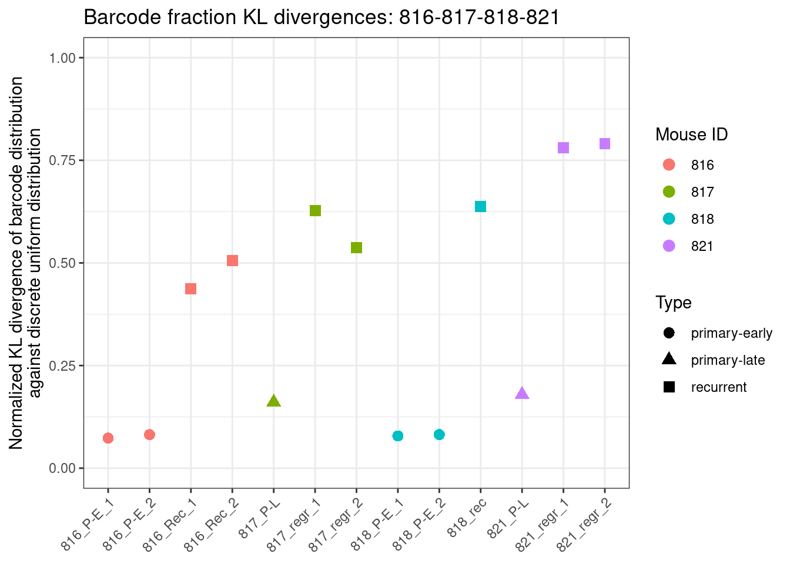
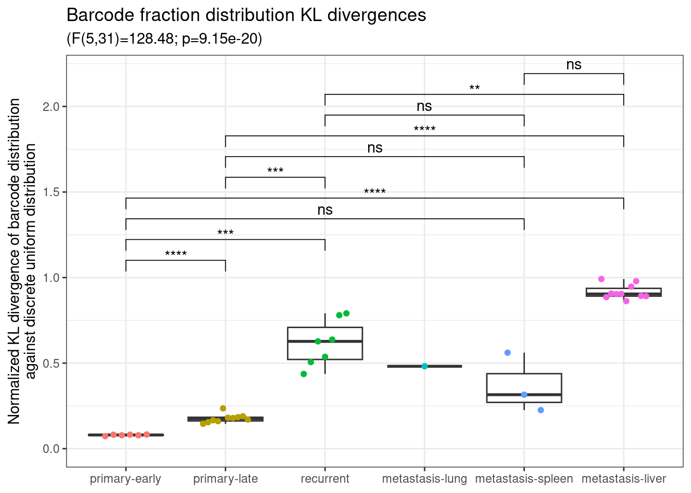
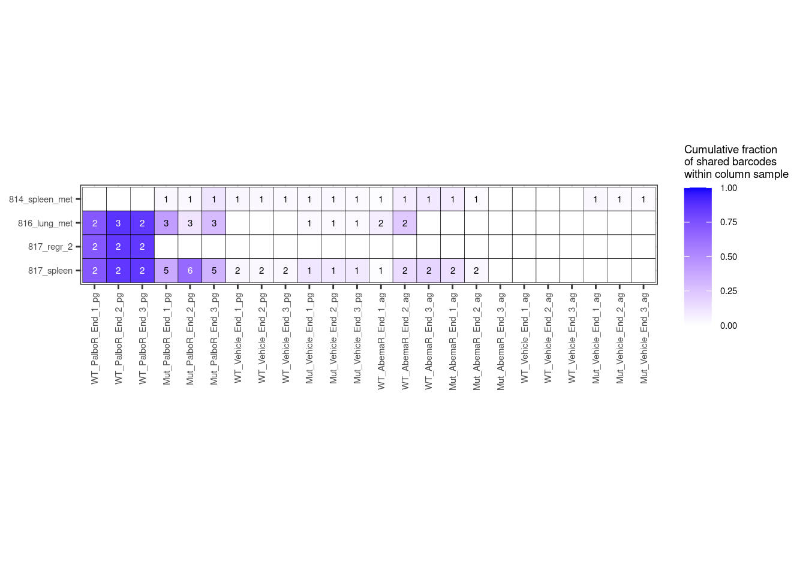
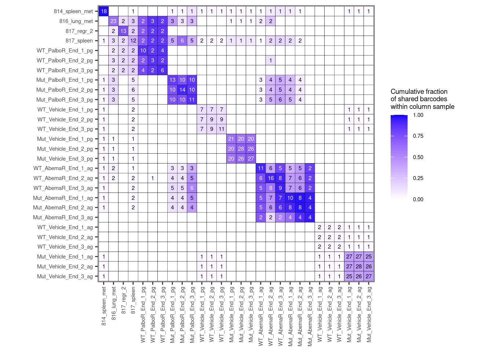

library(tidyverse)
library(viridis)
library(RColorBrewer)
library(ggpubr)
library(rstatix)
library(philentropy)3 In-vivo barcode analyses
3.1 Preliminaries
Raw barcode count data are listed in Supplementary Tables S2, under the sheet names:
- Barcodes_libr_&_Parental_Palbo (Parental_3_passage_3_Count)
- Barcodes_Parental_Abema
- Barcodes_Palbo_study
- Barcodes_Abema_study
- Barcodes_clones
- Barcodes_tumors_&_recurrences
In the below code, we read in barcode counts and metadata from tables that compile this same data together into a long-format.
3.1.1 Load in libraries.
3.1.2 Create output data, plot folders.
dir.create("data/raw/03-in-vivo-barcoding", recursive = TRUE) # input files
dir.create("data/processed/03-in-vivo-barcoding", recursive = TRUE) # output data, plots3.1.3 Sample structure of formatted barcode count, metadata tables.
print(str(readr::read_tsv("data/raw/01-barcoding/bct-counts_abema-gradual.tsv")))spc_tbl_ [744,265 × 5] (S3: spec_tbl_df/tbl_df/tbl/data.frame)
$ filename : chr [1:744265] "20200226_Basal_P10_CG7902_S1_R1_001.barcode.txt" "20200226_Basal_P10_CG7902_S1_R1_001.barcode.txt" "20200226_Basal_P10_CG7902_S1_R1_001.barcode.txt" "20200226_Basal_P10_CG7902_S1_R1_001.barcode.txt" ...
$ sample_name: chr [1:744265] "20200226_Basal_P10_CG7902_S1_R1_001" "20200226_Basal_P10_CG7902_S1_R1_001" "20200226_Basal_P10_CG7902_S1_R1_001" "20200226_Basal_P10_CG7902_S1_R1_001" ...
$ barcode : chr [1:744265] "TCACTGAGTGTGACAGTGTCACAGACAGAG" "TGTCTCTGTGACAGTGTGTGACTGTGTGTC" "AGTGTGTGTGAGTCAGTGAGTGTGACAGAG" "AGAGTCAGAGTGTGAGTCAGACAGTGACTG" ...
$ count : num [1:744265] 169170 107713 79455 76469 65691 ...
$ fraction : num [1:744265] 0.00543 0.00346 0.00255 0.00245 0.00211 ...
- attr(*, "spec")=
.. cols(
.. filename = col_character(),
.. sample_name = col_character(),
.. barcode = col_character(),
.. count = col_double(),
.. fraction = col_double()
.. )
- attr(*, "problems")=<externalptr>
NULLprint(str(readr::read_tsv("data/raw/01-barcoding/bct-metadata_abema-gradual.tsv")))spc_tbl_ [37 × 8] (S3: spec_tbl_df/tbl_df/tbl/data.frame)
$ sample_name : chr [1:37] "20200226_Basal_P10_CG7902_S1_R1_001" "20210921_DOX_DMSO_p14_1_CG9329_S4_R1_001" "20210921_DOX_DMSO_p14_2_CG9329_S5_R1_001" "20210921_DOX_DMSO_p14_3_CG9329_S6_R1_001" ...
$ condition : chr [1:37] "Parental" "DOX" "DOX" "DOX" ...
$ treatment : chr [1:37] "Parental" "DMSO" "DMSO" "DMSO" ...
$ passage : chr [1:37] "p10" "p14" "p14" "p14" ...
$ dose : chr [1:37] "/" "/" "/" "/" ...
$ timepoint : chr [1:37] "Parental" "Early" "Early" "Early" ...
$ replicate_id: num [1:37] 1 1 2 3 1 2 3 1 2 3 ...
$ experiment : chr [1:37] "abema-gradual" "abema-gradual" "abema-gradual" "abema-gradual" ...
- attr(*, "spec")=
.. cols(
.. sample_name = col_character(),
.. condition = col_character(),
.. treatment = col_character(),
.. passage = col_character(),
.. dose = col_character(),
.. timepoint = col_character(),
.. replicate_id = col_double(),
.. experiment = col_character()
.. )
- attr(*, "problems")=<externalptr>
NULLprint(str(readr::read_tsv("data/raw/01-barcoding/bct-counts_abema-gradual.tsv")))spc_tbl_ [744,265 × 5] (S3: spec_tbl_df/tbl_df/tbl/data.frame)
$ filename : chr [1:744265] "20200226_Basal_P10_CG7902_S1_R1_001.barcode.txt" "20200226_Basal_P10_CG7902_S1_R1_001.barcode.txt" "20200226_Basal_P10_CG7902_S1_R1_001.barcode.txt" "20200226_Basal_P10_CG7902_S1_R1_001.barcode.txt" ...
$ sample_name: chr [1:744265] "20200226_Basal_P10_CG7902_S1_R1_001" "20200226_Basal_P10_CG7902_S1_R1_001" "20200226_Basal_P10_CG7902_S1_R1_001" "20200226_Basal_P10_CG7902_S1_R1_001" ...
$ barcode : chr [1:744265] "TCACTGAGTGTGACAGTGTCACAGACAGAG" "TGTCTCTGTGACAGTGTGTGACTGTGTGTC" "AGTGTGTGTGAGTCAGTGAGTGTGACAGAG" "AGAGTCAGAGTGTGAGTCAGACAGTGACTG" ...
$ count : num [1:744265] 169170 107713 79455 76469 65691 ...
$ fraction : num [1:744265] 0.00543 0.00346 0.00255 0.00245 0.00211 ...
- attr(*, "spec")=
.. cols(
.. filename = col_character(),
.. sample_name = col_character(),
.. barcode = col_character(),
.. count = col_double(),
.. fraction = col_double()
.. )
- attr(*, "problems")=<externalptr>
NULLprint(str(readr::read_tsv("data/raw/01-barcoding/bct-metadata_abema-gradual.tsv")))spc_tbl_ [37 × 8] (S3: spec_tbl_df/tbl_df/tbl/data.frame)
$ sample_name : chr [1:37] "20200226_Basal_P10_CG7902_S1_R1_001" "20210921_DOX_DMSO_p14_1_CG9329_S4_R1_001" "20210921_DOX_DMSO_p14_2_CG9329_S5_R1_001" "20210921_DOX_DMSO_p14_3_CG9329_S6_R1_001" ...
$ condition : chr [1:37] "Parental" "DOX" "DOX" "DOX" ...
$ treatment : chr [1:37] "Parental" "DMSO" "DMSO" "DMSO" ...
$ passage : chr [1:37] "p10" "p14" "p14" "p14" ...
$ dose : chr [1:37] "/" "/" "/" "/" ...
$ timepoint : chr [1:37] "Parental" "Early" "Early" "Early" ...
$ replicate_id: num [1:37] 1 1 2 3 1 2 3 1 2 3 ...
$ experiment : chr [1:37] "abema-gradual" "abema-gradual" "abema-gradual" "abema-gradual" ...
- attr(*, "spec")=
.. cols(
.. sample_name = col_character(),
.. condition = col_character(),
.. treatment = col_character(),
.. passage = col_character(),
.. dose = col_character(),
.. timepoint = col_character(),
.. replicate_id = col_double(),
.. experiment = col_character()
.. )
- attr(*, "problems")=<externalptr>
NULLprint(str(readr::read_tsv("data/raw/03-in-vivo-barcoding/bct-counts_mice-met-18.tsv")))spc_tbl_ [825,204 × 5] (S3: spec_tbl_df/tbl_df/tbl/data.frame)
$ filename : chr [1:825204] "20180928_816_P-E_1_CG6099_S1_R1_001.barcode.txt" "20180928_816_P-E_1_CG6099_S1_R1_001.barcode.txt" "20180928_816_P-E_1_CG6099_S1_R1_001.barcode.txt" "20180928_816_P-E_1_CG6099_S1_R1_001.barcode.txt" ...
$ sample_name: chr [1:825204] "20180928_816_P-E_1_CG6099_S1_R1_001" "20180928_816_P-E_1_CG6099_S1_R1_001" "20180928_816_P-E_1_CG6099_S1_R1_001" "20180928_816_P-E_1_CG6099_S1_R1_001" ...
$ barcode : chr [1:825204] "TCACTGAGTGTGACAGTGTCACAGACAGAG" "AGTGACTGACACTGAGAGACAGTGAGTGTG" "AGAGTCAGAGTGTGAGTCAGACAGTGACTG" "ACAGAGAGACTGTGAGAGAGACAGAGTCTG" ...
$ count : num [1:825204] 40768 31070 27888 22332 19723 ...
$ fraction : num [1:825204] 0.001813 0.001381 0.00124 0.000993 0.000877 ...
- attr(*, "spec")=
.. cols(
.. filename = col_character(),
.. sample_name = col_character(),
.. barcode = col_character(),
.. count = col_double(),
.. fraction = col_double()
.. )
- attr(*, "problems")=<externalptr>
NULLprint(str(readr::read_tsv("data/raw/03-in-vivo-barcoding/bct-metadata_mice-met-18.tsv")))spc_tbl_ [37 × 9] (S3: spec_tbl_df/tbl_df/tbl/data.frame)
$ filename : chr [1:37] "20180928_816_P-E_1_CG6099_S1_R1_001.barcode.txt" "20180928_816_P-E_2_CG6099_S4_R1_001.barcode.txt" "20180928_818_P-E_1_CG6099_S2_R1_001.barcode.txt" "20180928_818_P-E_2_CG6099_S5_R1_001.barcode.txt" ...
$ condition : chr [1:37] "DOX" "DOX" "DOX" "DOX" ...
$ timepoint : chr [1:37] "early" "early" "early" "early" ...
$ tumor_type : chr [1:37] "primary" "primary" "primary" "primary" ...
$ biorepl_id : chr [1:37] "816_P-E_1" "816_P-E_2" "818_P-E_1" "818_P-E_2" ...
$ sample_name : chr [1:37] "20180928_816_P-E_1_CG6099_S1_R1_001" "20180928_816_P-E_2_CG6099_S4_R1_001" "20180928_818_P-E_1_CG6099_S2_R1_001" "20180928_818_P-E_2_CG6099_S5_R1_001" ...
$ biorepl_number: num [1:37] 1 2 1 2 1 2 1 1 1 1 ...
$ mouse_id : num [1:37] 816 816 818 818 823 823 813 814 815 817 ...
$ experiment : chr [1:37] "mice-met-18" "mice-met-18" "mice-met-18" "mice-met-18" ...
- attr(*, "spec")=
.. cols(
.. filename = col_character(),
.. condition = col_character(),
.. timepoint = col_character(),
.. tumor_type = col_character(),
.. biorepl_id = col_character(),
.. sample_name = col_character(),
.. biorepl_number = col_double(),
.. mouse_id = col_double(),
.. experiment = col_character()
.. )
- attr(*, "problems")=<externalptr>
NULL3.2 Load in function to calculate in-vivo barcode entropies
#' Plot normalized KL divergences of barcode fraction distributions against a
#' discrete uniform normal for the specified mouse samples separately.
#'
#' Uses normalized natural log KL divergences as D_{KL}(P||Q) / log(|P|) where P
#' is the sample barcode fraction distribution and Q is the discrete uniform
#' distribution over the same number of total barcodes using philentropy::KL,
#' and |P| is the total number of discrete atoms in the discrete distributions P, Q.
#'
#' Note, normalized KL divergences are used here instead of Shannon entropies.
#'
#' @param infile_counts Path to tsv of long-format barcode counts.
#' @param infile_meta Path to tsv of long-format barcode metadata.
#' @param filter_treatment Vector of treatments to filter samples to. Some of
#' c("primary-early", "primary-late", "recurrent", "metastasis-lung",
#' "metastasis-spleen", "metastasis-liver"). Keeps all if NULL.
#' @param filter_mouse_id Vector of mouse IDs to filter to. Keeps all if NULL.
#' @param include_palbo_gradual_dmso_only Logical. Include the Vehicle sample
#' from the palbo-gradual experiment only?
#' @param padj.signif.stars Logical. Plot significance stars?
#' @param freq_thresh Minimum frequency threshold (0-1) to filter out low-frequency barcodes.
#' @param width Plot width (in).
#' @param height Plot height (in).
#' @param data_dir Processed data directory.
#' @param output_dir Processed output directory.
plot_barcode_fraction_KL_divergences_against_discrete_uniform_mouse_met_18_separate_samples <- function(
infile_counts,
infile_meta,
filter_treatment = c(
"primary-early",
"primary-late",
"recurrent",
"metastasis-lung",
"metastasis-spleen",
"metastasis-liver"
),
filter_mouse_id = NULL,
include_palbo_gradual_dmso_only = FALSE,
# padj.signif.stars = FALSE,
freq_thresh = NULL,
width = 7,
height = 5,
data_dir = "data/processed/03-in-vivo-barcoding",
output_dir = "data/processed/03-in-vivo-barcoding"
) {
counts <- purrr::map_dfr(
infile_counts,
readr::read_tsv,
show_col_types = FALSE
)
meta <- purrr::map_dfr(
infile_meta,
readr::read_tsv,
show_col_types = FALSE
) %>%
dplyr::mutate(
treatment = dplyr::case_when(
timepoint == "early" & tumor_type == "primary" ~ "primary-early",
timepoint == "late" & tumor_type == "primary" ~ "primary-late",
tumor_type == "recurrent" ~ "recurrent",
tumor_type == "metastasis" &
grepl("lung", biorepl_id) ~ "metastasis-lung",
tumor_type == "metastasis" &
grepl("spleen", biorepl_id) ~ "metastasis-spleen",
tumor_type == "metastasis" &
grepl("liver", biorepl_id) ~ "metastasis-liver"
)
) |>
dplyr::mutate(
treatment = factor(
treatment,
levels = c(
"primary-early",
"primary-late",
"recurrent",
"metastasis-lung",
"metastasis-spleen",
"metastasis-liver"
)
)
) |>
dplyr::mutate(graph_name = treatment) |>
dplyr::mutate(graph_color = treatment)
expt <- gsub(".*bct-metadata_(.*)\\.tsv", "\\1", infile_meta)
meta <- meta %>%
dplyr::mutate(graph_color = fct_drop(graph_color))
if (!is.null(filter_treatment)) {
meta <- meta |> dplyr::filter(treatment %in% filter_treatment)
}
if (!is.null(filter_mouse_id)) {
meta <- meta |> dplyr::filter(mouse_id %in% filter_mouse_id)
}
counts_meta <- counts %>%
dplyr::inner_join(meta, by = "sample_name") %>%
dplyr::select(-fraction) %>% # drop existing fraction and recalculate
dplyr::group_by(sample_name) %>%
dplyr::mutate(fraction = count / sum(count)) %>%
dplyr::ungroup()
if (!is.null(filter_treatment)) {
counts_meta <- counts_meta |> dplyr::filter(treatment %in% filter_treatment)
}
if (!is.null(filter_mouse_id)) {
counts_meta <- counts_meta |> dplyr::filter(mouse_id %in% filter_mouse_id)
}
if (!is.null(freq_thresh)) {
counts_meta <- counts_meta %>%
dplyr::group_by(barcode) %>% # Filter out any barcodes that are below a certain threshold across all observations
dplyr::filter(max(fraction) >= freq_thresh) %>%
dplyr::ungroup()
}
# Test if proper subset of samples is selected
if (!is.null(filter_treatment)) {
stopifnot(all(counts_meta$treatment %in% filter_treatment))
}
if (!is.null(filter_mouse_id)) {
stopifnot(all(counts_meta$mouse_id %in% filter_mouse_id))
}
counts_meta_entropy <- counts_meta %>%
dplyr::group_by(
sample_name,
graph_name,
graph_color,
biorepl_id,
mouse_id,
treatment
) %>%
dplyr::summarize(
n_unique_barcodes = dplyr::n(),
n_count_barcodes = sum(count),
js_divergence = philentropy::JSD(rbind(
fraction,
(rep(1, length(fraction)) / length(fraction))
)),
kl_divergence = philentropy::KL(
rbind(fraction, (rep(1, length(fraction)) / length(fraction))),
unit = "log"
) /
log(length(fraction)),
n_unique_barcodes_check = length(fraction)
)
i <- "kl_divergence"
yla = "Normalized KL divergence of barcode distribution\nagainst discrete uniform distribution"
outfile <- sprintf(
file.path(
output_dir,
"barcode-fraction-KL-divergences-scatterplot-by-sample_%s_%s_%s_%s.pdf"
),
paste0(expt, collapse = "-"),
paste0(filter_treatment, collapse = "-"),
paste0(filter_mouse_id, collapse = "-"),
i
)
outfile_jsd <- sprintf(
file.path(
output_dir,
"barcode-fraction-JS-divergences-scatterplot-by-sample_%s_%s_%s_%s.pdf"
),
paste0(expt, collapse = "-"),
paste0(filter_treatment, collapse = "-"),
paste0(filter_mouse_id, collapse = "-"),
"js_divergence"
)
outfile_csv <- sprintf(
file.path(
data_dir,
"barcode-fraction-KL-divergences-scatterplot-by-sample_%s_%s_%s_%s.csv"
),
paste0(expt, collapse = "-"),
paste0(filter_treatment, collapse = "-"),
paste0(filter_mouse_id, collapse = "-"),
i
)
# Write out the table of the normalized KL divergences
readr::write_csv(counts_meta_entropy, outfile_csv)
outfile_ttests <- sprintf(
file.path(
data_dir,
"barcode-fraction-KL-divergences-scatterplot-by-sample_%s_%s_%s_%s.csv"
),
paste0(expt, collapse = "-"),
paste0(filter_treatment, collapse = "-"),
paste0(filter_mouse_id, collapse = "-"),
i
)
print(outfile)
set.seed(840)
plt <- counts_meta_entropy %>%
dplyr::ungroup() |>
dplyr::mutate(
biorepl_id = forcats::fct_recode(
biorepl_id,
`816_Lung` = "816_lung_met",
`817_Spleen` = "817_spleen"
)
) |>
dplyr::mutate(
biorepl_id = forcats::fct_relevel(
biorepl_id,
"816_P-E_1",
"816_P-E_2",
"816_Rec_1",
"816_Rec_2",
"816_Lung",
"817_P-L",
"817_regr_1",
"817_regr_2",
"817_Spleen",
"818_P-E_1",
"818_P-E_2",
"818_rec",
"821_P-L",
"821_regr_1",
"821_regr_2"
)
) |>
dplyr::mutate(`Mouse ID` = factor(mouse_id)) |>
dplyr::rename(Type = "graph_color") |>
ggplot2::ggplot(ggplot2::aes(x = biorepl_id, y = !!sym(i))) +
ggplot2::geom_point(
ggplot2::aes(color = `Mouse ID`, shape = Type),
size = 3
) +
ggplot2::theme_bw() +
ggplot2::ylim(0, 1) +
ggplot2::theme(
axis.text.x = ggplot2::element_text(angle = 45, vjust = 1, hjust = 1)
) +
ggplot2::labs(
x = NULL,
y = yla,
title = sprintf(
"Barcode fraction KL divergences: %s",
paste0(filter_mouse_id, collapse = "-")
)
)
ggplot2::ggsave(outfile, plt, height = height, width = width)
return(plt)
}3.3 Plot barcode entropies for in-vivo local recurrences and respective primary-early or primery-late tumors (Figure 7H).
plot_barcode_fraction_KL_divergences_against_discrete_uniform_mouse_met_18_separate_samples(
infile_counts = c("data/raw/03-in-vivo-barcoding/bct-counts_mice-met-18.tsv"),
infile_meta = c("data/raw/03-in-vivo-barcoding/bct-metadata_mice-met-18.tsv"),
filter_mouse_id = c(816, 817, 818, 821),
filter_treatment = c("primary-early", "primary-late", "recurrent"),
width = 6,
freq_thresh = NULL
)[1] "data/processed/03-in-vivo-barcoding/barcode-fraction-KL-divergences-scatterplot-by-sample_mice-met-18_primary-early-primary-late-recurrent_816-817-818-821_kl_divergence.pdf"
3.4 Load in function to calculate and compare barcode entropies across in-vivo samples.
#' Plot normalized KL divergences of barcode fraction distributions against a
#' discrete uniform normal for the specified mouse met 18 samples, run one way
#' ANOVA and pairwise t-tests comparing sample groups.
#'
#' Uses normalized natural log KL divergences as D_{KL}(P||Q) / log(|P|) where P
#' is the sample barcode fraction distribution and Q is the discrete uniform
#' distribution over the same number of total barcodes using philentropy::KL,
#' and |P| is the total number of discrete atoms in the discrete distributions P, Q.
#'
#' Note, normalized KL divergences are used here instead of Shannon entropies.
#'
#' @param infile_counts Path to barcode counts.
#' @param infile_meta Path to barcode metadata.
#' @param plt_var_x Variable to plot on x axis and perform t tests on.
#' @param plt_t_test_var1 Variable level for t test numerator. Tests all pairwise comparisons if NULL.
#' @param plt_t_test_var2 Variable level for t test denominator. Tests all pairwise comparisons if NULL.
#' @param filter_treatment Vector of treatments to filter samples to. Some of
#' c("primary-early", "primary-late", "recurrent", "metastasis-lung",
#' "metastasis-spleen", "metastasis-liver"). Keeps all if NULL.
#' @param filter_mouse_id Vector of mouse IDs to filter to. Keeps all if NULL.
#' @param include_palbo_gradual_dmso_only Logical. Include the Vehicle sample
#' from the palbo-gradual experiment only?
#' @param padj.signif.stars Logical. Plot significance stars?
#' @param freq_thresh Minimum frequency threshold (0-1) to filter out low-frequency barcodes.
#' @param width Plot width (in).
#' @param height Plot height (in).
#' @param data_dir Processed data directory.
#' @param output_dir Processed output directory
plot_barcode_fraction_KL_divergences_against_discrete_uniform_mouse_met_18 <- function(
infile_counts,
infile_meta,
plt_var_x,
plt_t_test_var1 = NULL,
plt_t_test_var2 = NULL,
filter_treatment = c(
"primary-early",
"primary-late",
"recurrent",
"metastasis-lung",
"metastasis-spleen",
"metastasis-liver"
),
filter_mouse_id = NULL,
include_palbo_gradual_dmso_only = FALSE,
padj.signif.stars = TRUE,
freq_thresh = NULL,
width = 7,
height = 5,
data_dir = "data/processed/03-in-vivo-barcoding",
output_dir = "data/processed/03-in-vivo-barcoding"
) {
counts <- purrr::map_dfr(
infile_counts,
readr::read_tsv,
show_col_types = FALSE
)
meta <- purrr::map_dfr(
infile_meta,
readr::read_tsv,
show_col_types = FALSE
) %>%
mutate(
treatment = case_when(
timepoint == "early" & tumor_type == "primary" ~ "primary-early",
timepoint == "late" & tumor_type == "primary" ~ "primary-late",
tumor_type == "recurrent" ~ "recurrent",
tumor_type == "metastasis" &
grepl("lung", biorepl_id) ~ "metastasis-lung",
tumor_type == "metastasis" &
grepl("spleen", biorepl_id) ~ "metastasis-spleen",
tumor_type == "metastasis" &
grepl("liver", biorepl_id) ~ "metastasis-liver"
)
) |>
mutate(
treatment = factor(
treatment,
levels = c(
"primary-early",
"primary-late",
"recurrent",
"metastasis-lung",
"metastasis-spleen",
"metastasis-liver"
)
)
) |>
mutate(graph_name = treatment) |>
mutate(graph_color = treatment)
expt <- gsub(".*bct-metadata_(.*)\\.tsv", "\\1", infile_meta)
meta <- meta %>%
mutate(graph_color = fct_drop(graph_color))
if (!is.null(filter_treatment)) {
meta <- meta |> dplyr::filter(treatment %in% filter_treatment)
}
if (!is.null(filter_mouse_id)) {
meta <- meta |> dplyr::filter(mouse_id %in% filter_mouse_id)
}
counts_meta <- counts %>%
dplyr::inner_join(meta, by = "sample_name") %>%
dplyr::select(-fraction) %>% # drop existing fraction and recalculate
dplyr::group_by(sample_name) %>%
dplyr::mutate(fraction = count / sum(count)) %>%
dplyr::ungroup()
if (!is.null(filter_treatment)) {
counts_meta <- counts_meta |> dplyr::filter(treatment %in% filter_treatment)
}
if (!is.null(filter_mouse_id)) {
counts_meta <- counts_meta |> dplyr::filter(mouse_id %in% filter_mouse_id)
}
if (!is.null(freq_thresh)) {
counts_meta <- counts_meta %>%
dplyr::group_by(barcode) %>% # Filter out any barcodes that are below a certain threshold across all observations
dplyr::filter(max(fraction) >= freq_thresh) %>%
dplyr::ungroup()
}
# Test if proper subset of samples is selected
if (!is.null(filter_treatment)) {
stopifnot(all(counts_meta$treatment %in% filter_treatment))
}
if (!is.null(filter_mouse_id)) {
stopifnot(all(counts_meta$mouse_id %in% filter_mouse_id))
}
counts_meta_entropy <- counts_meta %>%
dplyr::group_by(sample_name, graph_name, graph_color, treatment) %>%
dplyr::summarize(
n_unique_barcodes = dplyr::n(),
n_count_barcodes = sum(count),
kl_divergence = philentropy::KL(
rbind(fraction, (rep(1, length(fraction)) / length(fraction))),
unit = "log"
) /
log(length(fraction)),
n_unique_barcodes_check = length(fraction)
)
i <- "kl_divergence"
yla = "Normalized KL divergence of barcode distribution\nagainst discrete uniform distribution"
outfile <- sprintf(
file.path(output_dir, "barcode-fraction-KL-divergences_%s_%s_%s_%s.pdf"),
paste0(expt, collapse = "-"),
paste0(filter_treatment, collapse = "-"),
paste0(filter_mouse_id, collapse = "-"),
i
)
outfile_ttests <- sprintf(
file.path(data_dir, "barcode-fraction-KL-divergences_%s_%s_%s_%s.csv"),
paste0(expt, collapse = "-"),
paste0(filter_treatment, collapse = "-"),
paste0(filter_mouse_id, collapse = "-"),
i
)
print(outfile)
# Run an ANOVA across all categories.
# Note, should really filter out any n=1 groups before we do this.
anova_res <- anova(lm(kl_divergence ~ graph_name, data = counts_meta_entropy))
anova_subtitle <- sprintf(
"(F(%i,%i)=%.2f; p=%.2e)",
anova_res$Df[[1]],
anova_res$Df[[2]],
anova_res$`F value`[[1]],
anova_res$`Pr(>F)`[[1]]
)
# Avoids cases where we don't have enough samples to run a test.
if (nrow(counts_meta_entropy) < 4) {
return()
}
res_ttests <- counts_meta_entropy |>
ungroup() |> # need to ungroup!
filter(treatment != "metastasis-lung") |> # only one sample in this group
dplyr::mutate(graph_name = forcats::fct_drop(graph_name)) |> # drop unused factor levels or t test tries to test empty groups
dplyr::group_by(graph_name) |>
dplyr::filter(n() >= 2) |> # drop groups with only one observation as we can't test this.
dplyr::ungroup() |>
dplyr::mutate(graph_name = forcats::fct_drop(graph_name)) |> # drop unused factor levels or t test tries to test empty groups
rstatix::pairwise_t_test(
formula = kl_divergence ~ graph_name,
detailed = TRUE,
pool.sd = FALSE,
var.equal = FALSE
) |>
rstatix::add_y_position()
readr::write_csv(
res_ttests |>
mutate(
group1 = gsub("\n", " ", group1),
group2 = gsub("\n", " ", group2)
) |>
as_tibble(),
outfile_ttests
)
print(res_ttests, n = 100)
# Include a format string to write results intext.
res_ttests_detailed <- res_ttests |>
dplyr::mutate(se_calculated = estimate / statistic) |> # back calculate what SE of the diff in means is from the t statistic
dplyr::relocate(se_calculated) |>
dplyr::mutate(
text_results = sprintf(
"(DM=%.2f, 95%% UMCI=[%.2f,%.2f], t(%.2f)=%.2f, padj=%s)", # 95% unadjusted marginal confidence interval for the diff in means
estimate,
conf.low,
conf.high,
df,
statistic,
format.pval(p.adj, digits = 2, eps = 1e-6, scientific = TRUE)
)
) |> # caps pvalues at 1e-6
dplyr::relocate(text_results) |>
dplyr::mutate(
conf.low.check = estimate - se_calculated * qt(1 - (0.05 / 2), df = df),
.after = conf.low
) |>
dplyr::mutate(
conf.high.check = estimate + se_calculated * qt(1 - (0.05 / 2), df = df),
.after = conf.high
) |>
dplyr::mutate(
pcheck = 2 * pt(abs(statistic), df = df, lower.tail = FALSE)
) |> # two-sided unadjusted pvalue
dplyr::mutate(
p.adj.check = p.adjust(pcheck, method = "holm"),
.after = "p.adj"
) |>
dplyr::relocate(pcheck, .after = p)
readr::write_csv(
res_ttests_detailed |>
mutate(
group1 = gsub("\n", " ", group1),
group2 = gsub("\n", " ", group2)
) |>
as_tibble(),
gsub("\\.csv", "-detailed.csv", outfile_ttests)
)
set.seed(840)
plt <- counts_meta_entropy %>%
ggplot2::ggplot(ggplot2::aes(x = graph_name, y = !!sym(i))) +
geom_boxplot(outlier.shape = NA) +
ggplot2::geom_point(
ggplot2::aes(col = graph_color),
position = ggplot2::position_dodge2(width = .5)
) +
ggplot2::theme_bw() +
ggplot2::theme(legend.position = "none") +
ggplot2::labs(
x = NULL,
y = yla,
title = "Barcode fraction distribution KL divergences",
subtitle = anova_subtitle
) +
ggplot2::ylim(0, NA)
if (padj.signif.stars) {
plt <- plt + ggpubr::stat_pvalue_manual(res_ttests, label = "p.adj.signif")
}
# Plot and show just a single t test results if we specify so.
if (!is.null(plt_t_test_var1) & !is.null(plt_t_test_var2)) {
a <- counts_meta_entropy %>%
dplyr::filter(!!sym(plt_var_x) == plt_t_test_var1) %>%
dplyr::pull(!!sym(i))
b <- counts_meta_entropy %>%
dplyr::filter(!!sym(plt_var_x) == plt_t_test_var2) %>%
dplyr::pull(!!sym(i))
print(
counts_meta_entropy %>% dplyr::filter(!!sym(plt_var_x) == plt_t_test_var1)
)
print(
counts_meta_entropy %>% dplyr::filter(!!sym(plt_var_x) == plt_t_test_var2)
)
ttest_summary <- t.test(a, b)
outfile <- sprintf(
file.path(
output_dir,
"barcode-fraction-KL-divergences_%s_%s_%s_%s_%s_%s_vs_%s_%s.pdf"
),
paste0(expt, collapse = "-"),
paste0(.timepoint, collapse = "-"),
paste0(.condition, collapse = "-"),
paste0(filter_treatment, collapse = "-"),
paste0(filter_mouse_id, collapse = "-"),
plt_t_test_var1,
plt_t_test_var2,
i
)
plt <- plt +
ggplot2::labs(
subtitle = sprintf(
"t-test: %s vs %s; pval = %s",
plt_t_test_var1,
plt_t_test_var2,
signif(ttest_summary$p.value, 4)
)
)
}
ggplot2::ggsave(outfile, plt, height = height, width = width)
return(plt)
}3.5 Plot barcode entropies across in-vivo samples (Figure 7K).
plot_barcode_fraction_KL_divergences_against_discrete_uniform_mouse_met_18(
infile_counts = c("data/raw/03-in-vivo-barcoding/bct-counts_mice-met-18.tsv"),
infile_meta = c("data/raw/03-in-vivo-barcoding/bct-metadata_mice-met-18.tsv"),
plt_var_x = "treatment",
padj.signif.stars = TRUE,
width = 8,
freq_thresh = NULL
)[1] "data/processed/03-in-vivo-barcoding/barcode-fraction-KL-divergences_mice-met-18_primary-early-primary-late-recurrent-metastasis-lung-metastasis-spleen-metastasis-liver__kl_divergence.pdf"
# A tibble: 10 × 19
estimate estimate1 estimate2 .y. group1 group2 n1 n2 statistic
<dbl> <dbl> <dbl> <chr> <chr> <chr> <int> <int> <dbl>
1 -0.0972 0.0795 0.177 kl_divergen… prima… prima… 6 10 -12.1
2 -0.537 0.0795 0.616 kl_divergen… prima… recur… 6 7 -10.6
3 -0.288 0.0795 0.367 kl_divergen… prima… metas… 6 3 -2.87
4 -0.837 0.0795 0.916 kl_divergen… prima… metas… 6 10 -62.5
5 -0.440 0.177 0.616 kl_divergen… prima… recur… 10 7 -8.54
6 -0.191 0.177 0.367 kl_divergen… prima… metas… 10 3 -1.90
7 -0.740 0.177 0.916 kl_divergen… prima… metas… 10 10 -47.8
8 0.249 0.616 0.367 kl_divergen… recur… metas… 7 3 2.22
9 -0.300 0.616 0.916 kl_divergen… recur… metas… 7 10 -5.71
10 -0.549 0.367 0.916 kl_divergen… metas… metas… 3 10 -5.43
# ℹ 10 more variables: p <dbl>, df <dbl>, conf.low <dbl>, conf.high <dbl>,
# method <chr>, alternative <chr>, p.adj <dbl>, p.adj.signif <chr>,
# y.position <dbl>, groups <named list>
3.6 Load in function to calculate and plot barcode overlaps between in-vivo and cell line samples.
#' Plot contingency table plot of shared barcodes above some fraction across
#' specified samples and conditions from mouse and cell line samples.
#'
#' Also write out versions that are just mets (rows) x cell line (column).
#'
#' @param infile_meta_mm18 Path to tsv of mouse barcode metadata.
#' @param infile_meta_cellline = Vector of paths to tsvs of cell line barcode data for Abema and Palbo.
#' @param infile_counts Vector of paths to tsvs of mouse and cell line barcode counts.
#' @param filter_mouse_id Vector of mouse IDs to filter to. Keeps all if NULL.
#' @param filter_condition Vector of mouse conditions to filter to. Keeps all if left as NULL.
#' @param filter_treatment Vector of mouse treatments to filter to. Keeps all if left as NULL.
#' @param filter_timepoint Vector of mouse timepoints to filter to. Keeps all if left as NULL.
#' @param filter_experiment Vector of mouse experiments to filter to. Keeps all if left as NULL.
#' @param filter_biorepl_id Vector of mouse bioreplicate ids to filter to. Keeps all if left as NULL.
#' @param filter_exclude_sid Vector of mouse sids (sample ids) to exclude from analysis. Keeps all if left as NULL.
#'
#' @param filter_condition_cellline Vector of cell line conditions to filter to. Keeps all if left as NULL.
#' @param filter_treatment_cellline Vector of cell line treatments to filter to. Keeps all if left as NULL.
#' @param filter_timepoint_cellline Vector of cell line timepoints to filter to. Keeps all if left as NULL.
#' @param filter_experiment_cellline Vector of cell line experiments to filter to. Keeps all if left as NULL.
#' @param filter_exclude_sid_cellline Vector of cell line sids (sample ids) to exclude from analysis. Keeps all if left as NULL.
#'
#' @param freq_thresh Minimum frequency threshold (0-1) to filter out low-frequency barcodes.
#' @param include_palbo_gradual_dmso_only Logical. Include the Vehicle sample
#' from the palbo-gradual experiment only?
#' @param width Plot width (in).
#' @param height Plot height (in).
#' @param ddir Processed data directory.
#' @param odir Processed output directory
plot_bct_barcode_overlaps_cellline_mouse_met_18 <- function(
infile_meta_mm18 = "data/raw/03-in-vivo-barcoding/bct-metadata_mice-met-18.tsv",
infile_meta_cellline = c(
"data/raw/01-barcoding/bct-metadata_abema-gradual.tsv",
"data/raw/01-barcoding/bct-metadata_palbo-gradual.tsv"
),
infile_counts = c(
"data/raw/03-in-vivo-barcoding/bct-counts_mice-met-18.tsv",
"data/raw/01-barcoding/bct-counts_abema-gradual.tsv",
"data/raw/01-barcoding/bct-counts_palbo-gradual.tsv"
),
filter_mouse_id = NULL,
filter_condition = NULL,
filter_treatment = NULL,
filter_timepoint = NULL,
filter_experiment = NULL,
filter_biorepl_id = NULL,
filter_exclude_sid = NULL,
filter_condition_cellline = NULL,
filter_treatment_cellline = NULL,
filter_timepoint_cellline = NULL,
filter_experiment_cellline = NULL,
filter_exclude_sid_cellline = NULL,
freq_thresh = 0.01,
include_palbo_gradual_dmso_only,
width = 10,
height = 6,
ddir = "data/processed/03-in-vivo-barcoding",
odir = "data/processed/03-in-vivo-barcoding"
) {
meta_mm18 <- readr::read_tsv(infile_meta_mm18) |>
dplyr::arrange(mouse_id)
meta_cellline <- readr::read_tsv(infile_meta_cellline) |>
dplyr::mutate(
condition = forcats::fct_recode(condition, Mut = "DOX", WT = "ND")
) |>
dplyr::mutate(
treatment = forcats::fct_recode(
treatment,
PalboR = "Palbo",
AbemaR = "Abema",
Vehicle = "DMSO"
)
) |>
dplyr::mutate(
experiment = forcats::fct_recode(
experiment,
ag = "abema-gradual",
pg = "palbo-gradual"
)
) |>
dplyr::mutate(condition = forcats::fct_relevel(condition, "WT", "Mut")) |>
dplyr::mutate(
treatment = forcats::fct_relevel(
treatment,
"Parental",
"PalboR",
"AbemaR",
"Vehicle"
)
) |>
dplyr::mutate(experiment = forcats::fct_relevel(experiment, "pg", "ag")) |>
dplyr::mutate(
timepoint = forcats::fct_relevel(
timepoint,
"Parental",
"Early",
"Middle",
"End"
)
) |>
dplyr::arrange(experiment, treatment, condition, timepoint, replicate_id) |> # orders the samples correctly
dplyr::mutate(
biorepl_id = sprintf(
"%s_%s_%s_%s_%s",
condition,
treatment,
timepoint,
replicate_id,
experiment
)
)
counts <- readr::read_tsv(infile_counts) |>
group_by(sample_name) |>
mutate(fraction = count / sum(count)) |> # recalculate fraction per sample based on counts
ungroup()
# filter_mouse_id = NULL,
if (!is.null(filter_mouse_id)) {
meta_mm18 <- meta_mm18 |> dplyr::filter(mouse_id %in% filter_mouse_id)
}
if (!is.null(filter_condition)) {
meta_mm18 <- meta_mm18 |> dplyr::filter(condition %in% filter_condition)
}
if (!is.null(filter_treatment)) {
meta_mm18 <- meta_mm18 |> dplyr::filter(treatment %in% filter_treatment)
}
if (!is.null(filter_timepoint)) {
meta_mm18 <- meta_mm18 |> dplyr::filter(timepoint %in% filter_timepoint)
}
if (!is.null(filter_experiment)) {
meta_mm18 <- meta_mm18 |> dplyr::filter(experiment %in% filter_experiment)
}
if (!is.null(filter_biorepl_id)) {
meta_mm18 <- meta_mm18 |> dplyr::filter(biorepl_id %in% filter_biorepl_id)
}
if (!is.null(filter_exclude_sid)) {
meta_mm18 <- meta_mm18 |>
dplyr::filter(!(sample_name %in% filter_exclude_sid))
}
# Check that filtering was indeed performed.
if (!is.null(filter_mouse_id)) {
stopifnot(all(meta_mm18$mouse_id %in% filter_mouse_id))
}
if (!is.null(filter_condition)) {
stopifnot(all(meta_mm18$condition %in% filter_condition))
}
if (!is.null(filter_treatment)) {
stopifnot(all(meta_mm18$treatment %in% filter_treatment))
}
if (!is.null(filter_timepoint)) {
stopifnot(all(meta_mm18$timepoint %in% filter_timepoint))
}
if (!is.null(filter_experiment)) {
stopifnot(all(meta_mm18$experiment %in% filter_experiment))
}
if (!is.null(filter_exclude_sid)) {
stopifnot(all(!(meta_mm18$sample_name %in% filter_exclude_sid)))
}
if (!is.null(filter_condition_cellline)) {
meta_cellline <- meta_cellline |>
dplyr::filter(condition %in% filter_condition_cellline)
}
if (!is.null(filter_treatment_cellline)) {
meta_cellline <- meta_cellline |>
dplyr::filter(treatment %in% filter_treatment_cellline)
}
if (!is.null(filter_timepoint_cellline)) {
meta_cellline <- meta_cellline |>
dplyr::filter(timepoint %in% filter_timepoint_cellline)
}
if (!is.null(filter_experiment_cellline)) {
meta_cellline <- meta_cellline |>
dplyr::filter(experiment %in% filter_experiment_cellline)
}
if (!is.null(filter_exclude_sid_cellline)) {
meta_cellline <- meta_cellline |>
dplyr::filter(!(sample_name %in% filter_exclude_sid_cellline))
}
# Check that filtering was indeed performed.
if (!is.null(filter_condition)) {
stopifnot(all(meta_cellline$condition %in% filter_condition))
}
if (!is.null(filter_treatment)) {
stopifnot(all(meta_cellline$treatment %in% filter_treatment))
}
if (!is.null(filter_timepoint)) {
stopifnot(all(meta_cellline$timepoint %in% filter_timepoint))
}
if (!is.null(filter_experiment)) {
stopifnot(all(meta_cellline$experiment %in% filter_experiment))
}
if (!is.null(filter_exclude_sid)) {
stopifnot(all(!(meta_cellline$sample_name %in% filter_exclude_sid)))
}
outfile <- file.path(
odir,
sprintf(
"contingency-plot-cellline-mouse-met-18-freqthresh%0.2e-%s-%s-%s-%s-%s-%s-%s-%s-%s-%s.pdf",
freq_thresh,
paste0(filter_mouse_id, collapse = "-"),
paste0(filter_condition, collapse = "-"),
paste0(filter_treatment, collapse = "-"),
paste0(filter_timepoint, collapse = "-"),
paste0(filter_experiment, collapse = "-"),
paste0(filter_biorepl_id, collapse = "-"),
paste0(filter_condition_cellline, collapse = "-"),
paste0(filter_treatment_cellline, collapse = "-"),
paste0(filter_timepoint_cellline, collapse = "-"),
paste0(filter_experiment_cellline, collapse = "-")
)
)
outfile_subsetted_col_cumfrac <- file.path(
odir,
sprintf(
"contingency-plot-subsetted-column-cumfrac-cellline-mouse-met-18-freqthresh%0.2e-%s-%s-%s-%s-%s-%s-%s-%s-%s-%s.pdf",
freq_thresh,
paste0(filter_mouse_id, collapse = "-"),
paste0(filter_condition, collapse = "-"),
paste0(filter_treatment, collapse = "-"),
paste0(filter_timepoint, collapse = "-"),
paste0(filter_experiment, collapse = "-"),
paste0(filter_biorepl_id, collapse = "-"),
paste0(filter_condition_cellline, collapse = "-"),
paste0(filter_treatment_cellline, collapse = "-"),
paste0(filter_timepoint_cellline, collapse = "-"),
paste0(filter_experiment_cellline, collapse = "-")
)
)
outfile_subsetted_row_cumfrac <- file.path(
odir,
sprintf(
"contingency-plot-subsetted-row-cumfrac-cellline-mouse-met-18-freqthresh%0.2e-%s-%s-%s-%s-%s-%s-%s-%s-%s-%s.pdf",
freq_thresh,
paste0(filter_mouse_id, collapse = "-"),
paste0(filter_condition, collapse = "-"),
paste0(filter_treatment, collapse = "-"),
paste0(filter_timepoint, collapse = "-"),
paste0(filter_experiment, collapse = "-"),
paste0(filter_biorepl_id, collapse = "-"),
paste0(filter_condition_cellline, collapse = "-"),
paste0(filter_treatment_cellline, collapse = "-"),
paste0(filter_timepoint_cellline, collapse = "-"),
paste0(filter_experiment_cellline, collapse = "-")
)
)
meta <- rbind(
meta_cellline |> dplyr::select(sample_name, biorepl_id),
meta_mm18 |> dplyr::select(sample_name, biorepl_id)
)
counts <- counts |> # Filter out any barcodes that are below a certain threshold across all observations
dplyr::filter(fraction >= freq_thresh) %>%
dplyr::filter(sample_name %in% meta$sample_name)
stopifnot(all(counts$sample_name %in% meta$sample_name))
meta <- meta |>
dplyr::mutate(graph_name = biorepl_id) |>
dplyr::mutate(
graph_name = forcats::fct_relevel(
graph_name,
meta_mm18$biorepl_id,
meta_cellline$biorepl_id
)
)
(counts_ch <- counts |> dplyr::inner_join(meta, by = "sample_name"))
ct <- counts_ch |>
dplyr::select(biorepl_id, barcode, fraction) |>
tidyr::pivot_wider(
id_cols = barcode,
names_from = biorepl_id,
values_from = fraction,
values_fill = 0
) |>
tibble::column_to_rownames("barcode")
d_overlaps <- tidyr::expand_grid(s1 = colnames(ct), s2 = colnames(ct)) |>
purrr::pmap_dfr(\(s1, s2) {
data.frame(
s1 = s1,
s2 = s2,
n_shared_barcodes = sum((ct[, s1] > 0) & (ct[, s2] > 0)),
cum_frac_s1 = sum(ct[, s1] * ((ct[, s1] > 0) & (ct[, s2] > 0))),
cum_frac_s2 = sum(ct[, s2] * ((ct[, s1] > 0) & (ct[, s2] > 0)))
)
}) |>
dplyr::mutate(
s1 = forcats::fct_relevel(
s1,
meta_mm18$biorepl_id,
meta_cellline$biorepl_id
)
) |> # need to relevel after pivoting
dplyr::mutate(
s2 = forcats::fct_relevel(
s2,
meta_mm18$biorepl_id,
meta_cellline$biorepl_id
)
) # need to relevel after pivoting
plt <- d_overlaps |>
ggplot2::ggplot(ggplot2::aes(
x = s1,
y = s2,
fill = cum_frac_s1,
label = ifelse(n_shared_barcodes > 0, n_shared_barcodes, NA)
)) +
ggplot2::geom_tile(color = "black") +
ggplot2::geom_text(
ggplot2::aes(color = cum_frac_s1 > 0.5),
size = 2,
show.legend = FALSE
) +
ggplot2::theme_bw() +
ggplot2::labs(
x = NULL,
y = NULL,
fill = "Cumulative fraction\nof shared barcodes\nwithin column sample"
) +
ggplot2::scale_y_discrete(limits = rev) +
ggplot2::theme(
text = ggplot2::element_text(size = 7),
axis.text.x = ggplot2::element_text(angle = 90, vjust = 0.5, hjust = 1)
) +
ggplot2::scale_fill_gradient(
low = "white",
high = "blue",
limits = c(0, 1)
) +
ggplot2::scale_color_manual(values = c("black", "white")) +
ggplot2::coord_fixed(1)
if (!is.null(filter_biorepl_id)) {
# mets x cell line, fill is column cumulative fraction
plt_col_met <- d_overlaps |>
dplyr::filter(s2 %in% filter_biorepl_id) |>
dplyr::filter(!(s1 %in% filter_biorepl_id)) |>
ggplot2::ggplot(ggplot2::aes(
x = s1,
y = s2,
fill = cum_frac_s1,
label = ifelse(n_shared_barcodes > 0, n_shared_barcodes, NA)
)) +
ggplot2::geom_tile(color = "black") +
ggplot2::geom_text(
ggplot2::aes(color = cum_frac_s1 > 0.5),
size = 2,
show.legend = FALSE
) +
ggplot2::theme_bw() +
ggplot2::labs(
x = NULL,
y = NULL,
fill = "Cumulative fraction\nof shared barcodes\nwithin column sample"
) +
ggplot2::scale_y_discrete(limits = rev) +
ggplot2::theme(
text = ggplot2::element_text(size = 7),
axis.text.x = ggplot2::element_text(angle = 90, vjust = 0.5, hjust = 1)
) +
ggplot2::scale_fill_gradient(
low = "white",
high = "blue",
limits = c(0, 1)
) +
ggplot2::scale_color_manual(values = c("black", "white")) +
ggplot2::coord_fixed(1)
ggplot2::ggsave(
outfile_subsetted_col_cumfrac,
plt_col_met,
width = width,
height = height
)
}
ggplot2::ggsave(outfile, plt, width = width, height = height)
return(list(plt_col_met, plt))
}3.7 Plot barcode overlaps between in-vivo and cell line samples (Figure 7L, Supplementary Figure S9E).
plot_bct_barcode_overlaps_cellline_mouse_met_18(
filter_biorepl_id = c("814_spleen_met", "816_lung_met", "817_spleen", "817_regr_2"),
filter_timepoint_cellline = "End",
freq_thresh = 0.01,
include_palbo_gradual_dmso_only = FALSE,
width = 6,
height = 6)[[1]]
[[2]]
3.8 Print session info.
sessionInfo()R version 4.4.1 (2024-06-14)
Platform: x86_64-pc-linux-gnu
Running under: Rocky Linux 8.10 (Green Obsidian)
Matrix products: default
BLAS/LAPACK: /usr/lib64/libopenblasp-r0.3.15.so; LAPACK version 3.9.0
locale:
[1] LC_CTYPE=en_US.UTF-8 LC_NUMERIC=C
[3] LC_TIME=en_US.UTF-8 LC_COLLATE=en_US.UTF-8
[5] LC_MONETARY=en_US.UTF-8 LC_MESSAGES=en_US.UTF-8
[7] LC_PAPER=en_US.UTF-8 LC_NAME=C
[9] LC_ADDRESS=C LC_TELEPHONE=C
[11] LC_MEASUREMENT=en_US.UTF-8 LC_IDENTIFICATION=C
time zone: America/New_York
tzcode source: system (glibc)
attached base packages:
[1] stats graphics grDevices utils datasets methods base
other attached packages:
[1] philentropy_0.9.0 rstatix_0.7.2 ggpubr_0.6.0 RColorBrewer_1.1-3
[5] viridis_0.6.5 viridisLite_0.4.2 lubridate_1.9.4 forcats_1.0.0
[9] stringr_1.5.1 dplyr_1.1.4 purrr_1.0.4 readr_2.1.5
[13] tidyr_1.3.1 tibble_3.2.1 ggplot2_3.5.2 tidyverse_2.0.0
loaded via a namespace (and not attached):
[1] utf8_1.2.4 generics_0.1.3 stringi_1.8.7 hms_1.1.3
[5] digest_0.6.37 magrittr_2.0.3 evaluate_1.0.3 grid_4.4.1
[9] timechange_0.3.0 fastmap_1.2.0 jsonlite_2.0.0 backports_1.5.0
[13] Formula_1.2-5 gridExtra_2.3 scales_1.4.0 textshaping_1.0.0
[17] abind_1.4-8 cli_3.6.5 crayon_1.5.3 rlang_1.1.6
[21] bit64_4.6.0-1 withr_3.0.2 yaml_2.3.10 parallel_4.4.1
[25] tools_4.4.1 tzdb_0.5.0 ggsignif_0.6.4 broom_1.0.8
[29] vctrs_0.6.5 R6_2.6.1 lifecycle_1.0.4 bit_4.5.0.1
[33] car_3.1-3 htmlwidgets_1.6.4 vroom_1.6.5 ragg_1.4.0
[37] pkgconfig_2.0.3 pillar_1.10.2 gtable_0.3.6 Rcpp_1.0.14
[41] glue_1.8.0 systemfonts_1.2.2 xfun_0.52 tidyselect_1.2.1
[45] knitr_1.50 dichromat_2.0-0.1 farver_2.1.2 htmltools_0.5.8.1
[49] labeling_0.4.3 rmarkdown_2.29 carData_3.0-5 compiler_4.4.1